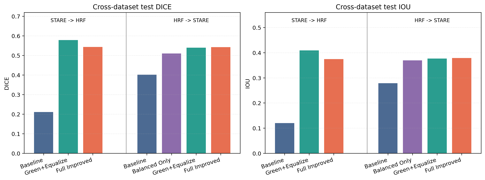
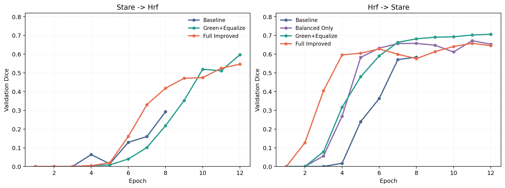
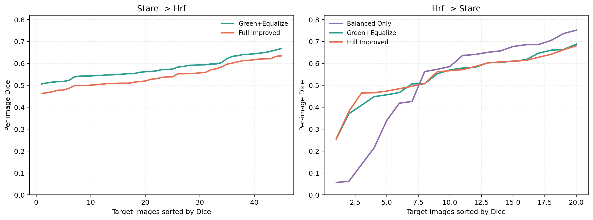
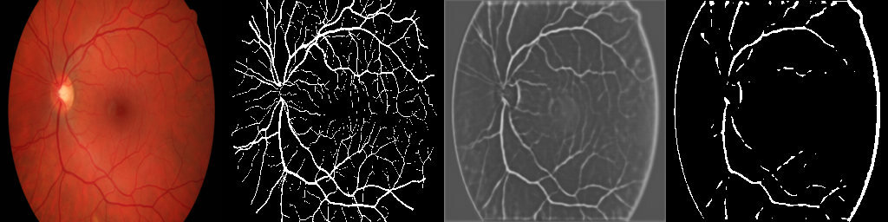
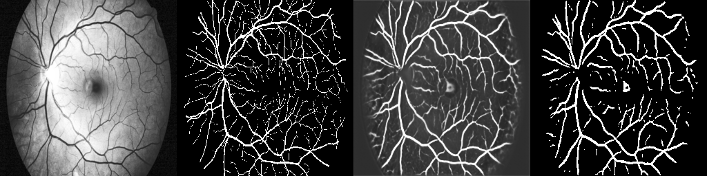
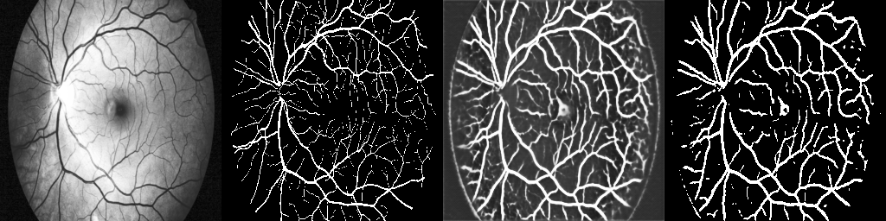
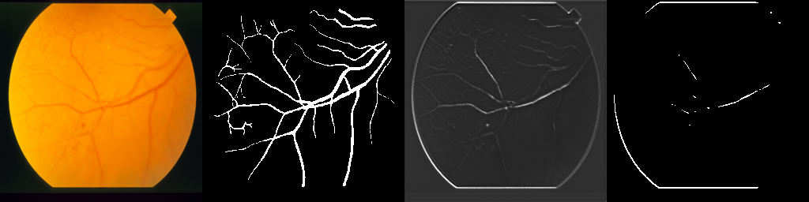
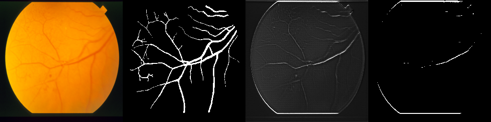
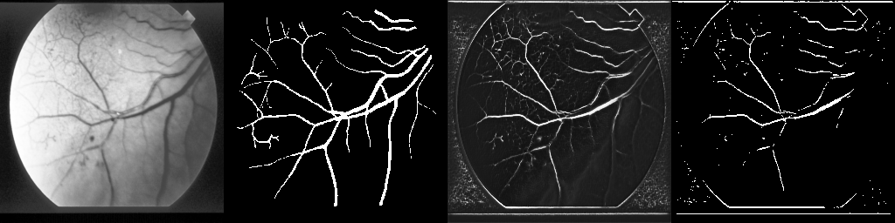
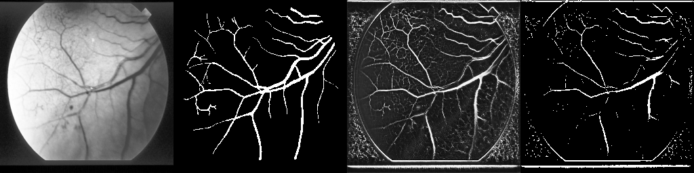

Cross-Dataset Retinal Vessel Segmentation
When training and testing come from different retinal datasets, the decisive improvement in this study comes from retinal-specific preprocessing rather than a heavier backbone.
Generalization breaks when the camera changes.
Retinal vessels are thin, low-contrast structures. A model can look solid on its training dataset and still fail as soon as contrast, crop geometry, or acquisition style shifts.
Small branches disappear first
Recall drops quickly once the image style changes, especially for faint peripheral vessels.
Only 16 or 36 training images
That is not a setting where brute-force model capacity is a reliable answer.
Different cameras
STARE and HRF differ in resolution, background texture, field of view, and vessel appearance.
Different contrast
The same vessel can be sharp in one dataset and ambiguous in another.
What actually transfers?
The paper studies whether preprocessing, loss design, and calibration matter more than architectural novelty.
A deliberately strict benchmark
STARE
20 annotated fundus images at about 700 × 605. When STARE is the source domain, the split is 16 train and 4 validation.
No target-domain finetuning. No pseudo-labeling. No test-time adaptation.
HRF
45 high-resolution fundus images at 3504 × 2336. When HRF is the source domain, the split is 36 train and 9 validation.
The network stays fixed. The recipe changes.
The baseline starts from raw RGB.
Green-channel replication improves vessel visibility. Histogram equalization reduces contrast mismatch.
No transformer, no heavier encoder, no attention module.
Balanced BCE is added only when class imbalance becomes the point of study.
The full recipe searches the best validation threshold before target-domain testing.
Baseline
U-Net, Dice + BCE, Adam, 8 epochs.
Green+Equalize
Green-channel extraction plus global histogram equalization, 12 epochs.
Balanced only
Raw input, class-balanced BCE, evaluated on HRF → STARE.
Full improved
Preprocessing, balanced loss, stronger augmentation, AdamW, threshold search.
Most of the gain appears after preprocessing.

Faster convergence is not the same as cleaner transfer.

- On STARE → HRF, Full improved rises earlier, but Green+Equalize continues climbing and overtakes it by the end.
- On HRF → STARE, every stronger recipe pulls away from the baseline quickly, showing how much signal the raw-input baseline leaves unused.
- STARE → HRF: Full improved gap 0.0032, Green+Equalize 0.0183, baseline 0.0816.
- HRF → STARE: Full improved gap 0.1151, Green+Equalize 0.1666, balanced only 0.1621.
The full recipe is not always the best final target model, but it makes source-side selection more stable.
Hard cases change the ranking.

- Green+Equalize median Dice: 0.5715.
- Full improved median Dice: 0.5359.
- Bottom quartile: 0.5271 versus 0.4855.
- Balanced only has the highest median at 0.6109.
- Its bottom quartile is only 0.1621.
- Worst sample im0324 drops to Dice 0.0566.
Balanced loss helps easier images. Preprocessing is what actually rescues the hard ones.
Two images explain the paper.
Preprocessing already restores most of the missing vessel structure.
The baseline undersegments side branches. Green+Equalize recovers them without needing the full recipe.



A hard sample gets rescued only after the input is aligned.
Balanced loss alone stays weak here. The preprocessing-heavy variants recover a much larger vessel tree.




What this paper actually proves
Preprocessing is the main result
Green-channel extraction plus histogram equalization explains most of the gain in both transfer directions.
Balanced loss helps, but selectively
It improves HRF → STARE, yet it is not the strongest explanation for generalization.
The full recipe shifts the operating point
It boosts sensitivity and stabilizes source-side selection, but it can also trade away cleanliness.
Hard-case analysis matters
Per-image logs and qualitative review are essential when external generalization is the real goal.
Before changing the backbone, align the retinal input.
This claim is intentionally narrow. The benchmark uses only two datasets, the original baseline kept a shorter MVP budget, and all runs use 256 × 256 inputs. That is exactly why the paper remains credible: it makes a careful claim and supports it with both quantitative and qualitative evidence.